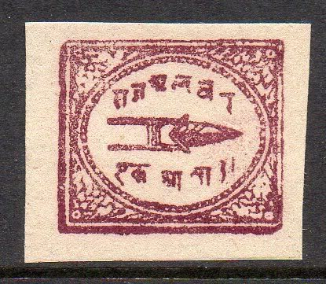
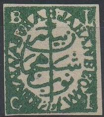
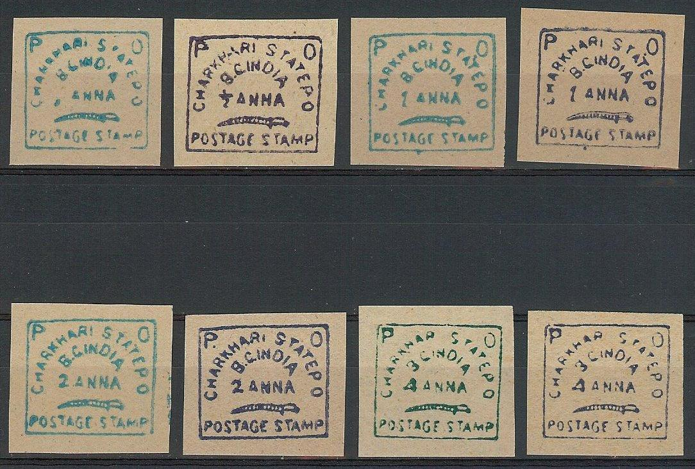
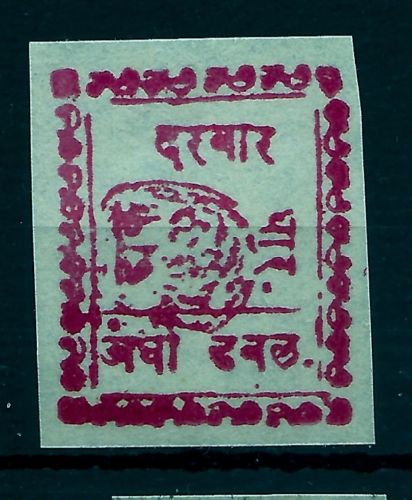
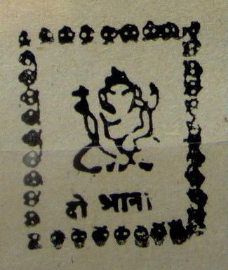
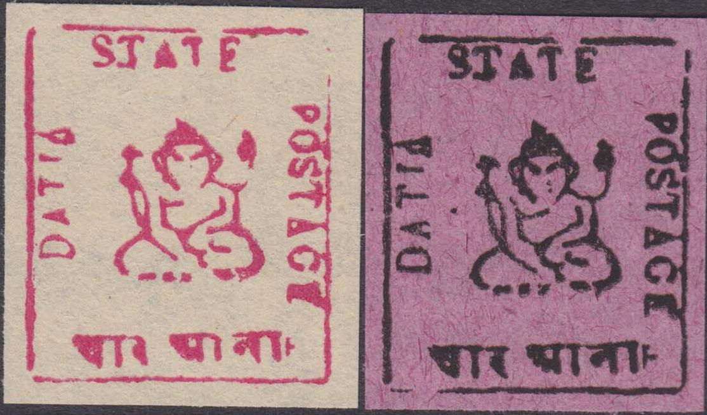
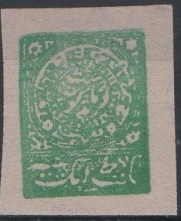
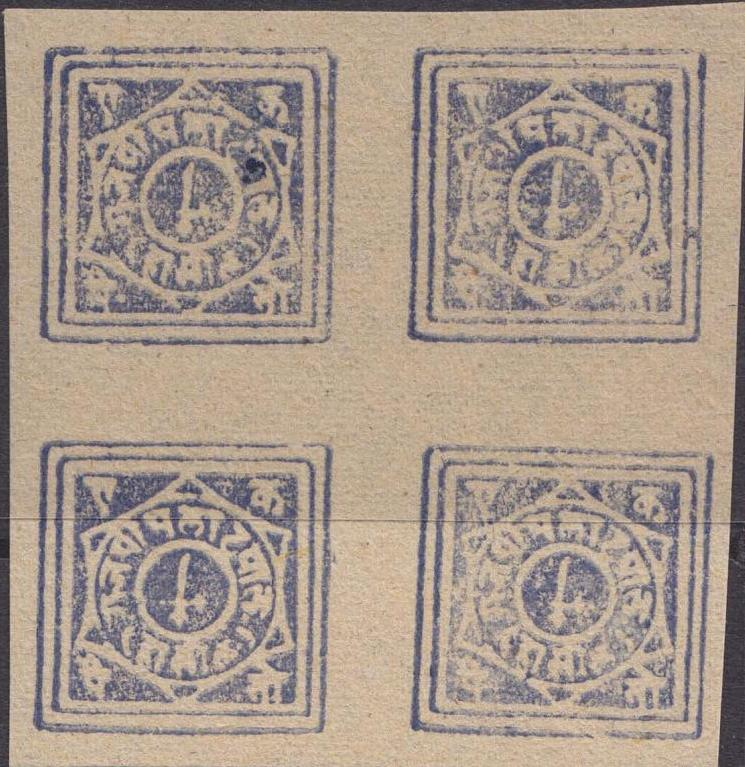

A whole bunch of forgeries of different states, all made by the same forger, I presume.
Note: on my website many of the
pictures can not be seen! They are of course present in the
catalogue;
contact me if you want to purchase it.
Many forgeries exist: see the excellent site http://www.princelystates.com/CurrentIssue/ff-04-01a.shtml for more information. In the 1980's (or so) many forgeries appeared on the market of almost every Indian State. These forgeries are virtually worthless. They are usually imperforate and appear also in colors that are non-existant in the genuine stamps. If I'm well informed, these stamps are known as Allahabad forgeries.
Examples:
A whole bunch of forgeries of different states, all made by the
same forger, I presume.

Alwar


Modern forgeries of Cashmir

More modern forgeries of Cashmir


Dhar, this image appears to have been copied straightaway from a
Stanley Gibbons catalogue (for example my 1972 Stamps of the
World catalogue)
 
Duttia forgeries

Faridkot
Jasdan forgery. I've also seen it in dark-brown color.

Kishengarh forgeries

Forgeries of Rajpipla
Forgeries of the 1854 issue of India, probably from the same
source.
Stamps - Timbres-Poste - Briefmarken
{kind=link}
{kind=link}
{kind=link}
{kind=link}
{kind=link}
{kind=link}